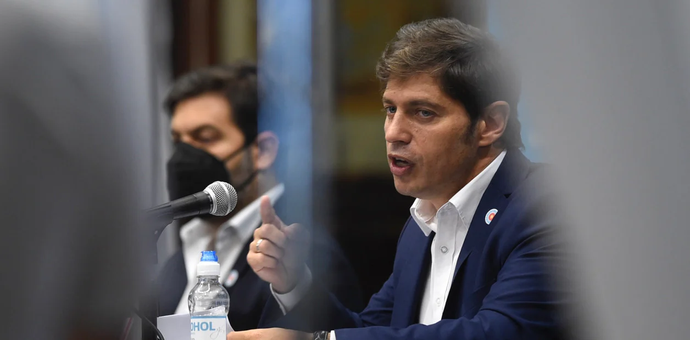
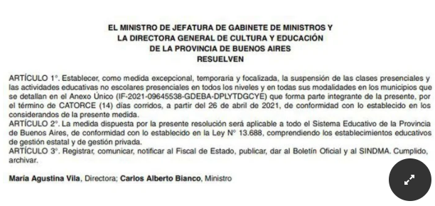

La medida regirá por 14 días a partir del 26 de abril en Bolívar, Castelli, General Villegas y Zarate.
El gobernador bonaerense Axel Kicillof suspendió las clases en cuatro municipios del interior de la provincia.
Tras días de tensión entre la Ciudad de Buenos Aires y el gobierno de la Nación por la suspensión de las clases presenciales en el Área Metropolitana de Buenos Aires (AMBA), el gobernador de la provincia de Buenos Aires, Axel Kicillof, dispuso la suspensión de clases en cuatro distritos del interior de la Provincia: Bolívar, Castelli, General Villegas y Zárate.La medida durará 14 días y comenzará a regir a partir del lunes 26 de abril.
El decreto bonaerense, publicado este jueves en el Boletín Oficial, establece “como medida excepcional, temporaria y focalizada, la suspensión de las clases presenciales y las actividades educativas no escolares presenciales en todos los niveles y en todas sus modalidades en los municipios” de Bolívar, Castelli, General Villegas y Zárate.
La medida durará “14 días corridos, a partir del 26 de abril de 2021″, indica el documento que lleva la firma del jefe de Gabinete provincial, Carlos Bianco, y de la Directora General de Educación y Cultura, María Agustina Vila
El lunes, el gobernador Axel Kicillof se había referido en duros términos a la decisión del Ejecutivo porteño de mantener las escuelas abiertas, pese al Decreto de Necesidad y Urgencia (DNU) del Gobierno nacional que suspendió las clases presenciales por 15 días en AMBA para mitigar los efectos de la segunda ola de la pandemia de coronavirus.
Kicillof consideró “repugnante” que se utilice a la Justicia “para perjudicar a los que tienen que ser cuidados” y aseguró que, en cambio, él prefiere “ser antipático” antes que ser “absolutamente irresponsable y hacer política con la vida y la muerte”.